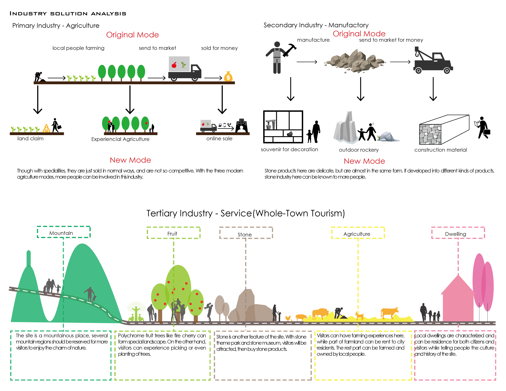
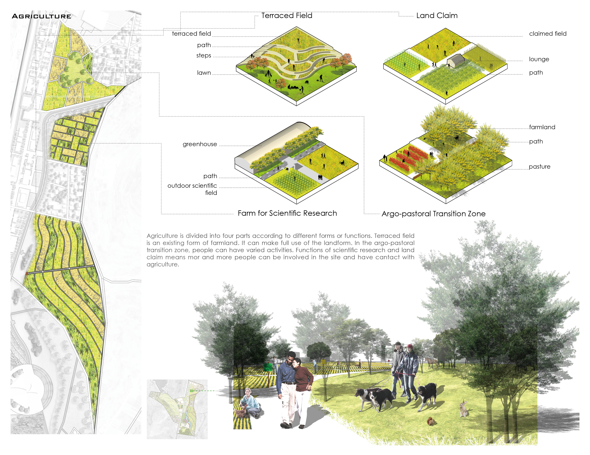
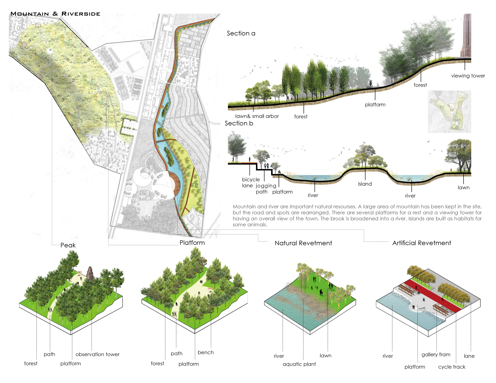
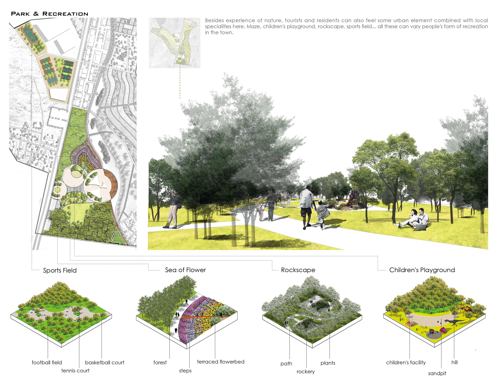
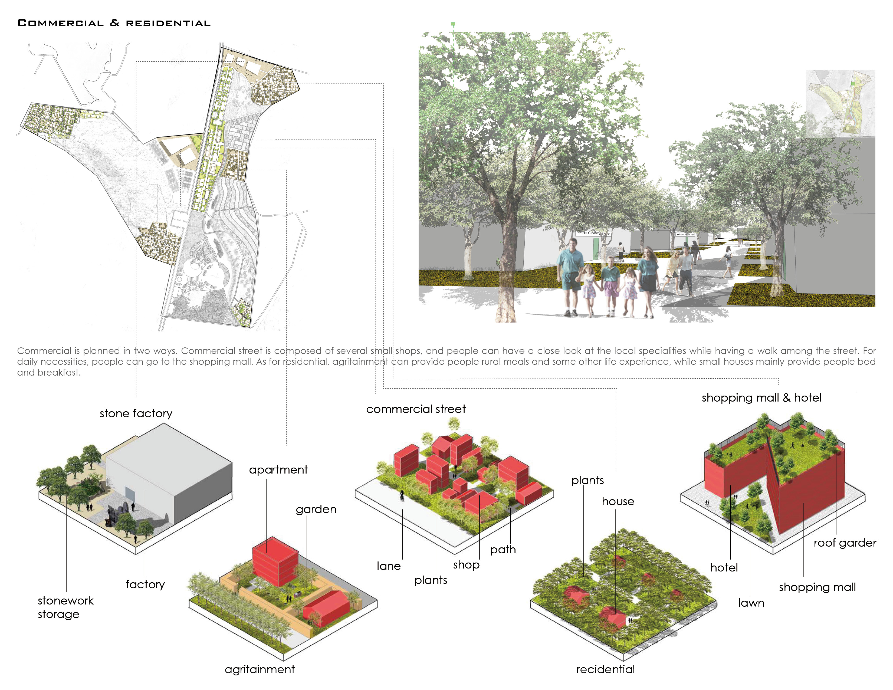

Back to village
whole-town tourism
Urban Design of Shuiquan Town
2017 Fall | Individual Work | Instructors: Ting Song, Jinbiao Xi
Despite the fast pace of urbanization in China, Shuiquan is one of the undeveloped towns left. To make a living, young people move to cities for more job opportunities, while many people growing up in cities hope to experience rural life. The aim of this project is to create a tourism town through the specialities of the town- fruits and stone ,which can develop the town while creating an experiential rural life for tourists from city.


Design Concept

Agriculture

Mountain + Riverside

Recreation

Commercial + Residential
×